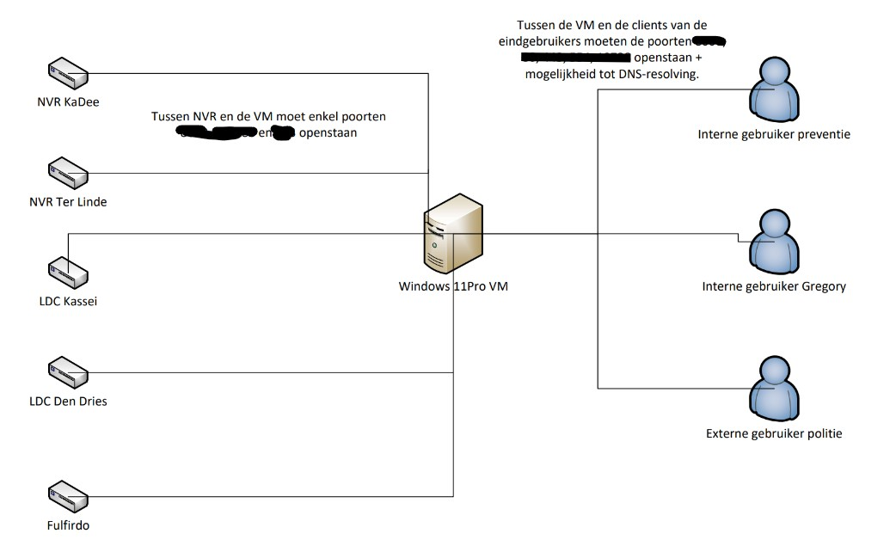

Camera Configuratie Zorg Vilvoorde
Hoe kwam het project tot stand
Naar aanleiding van het onveiligheidsgevoel van de Vilvoordse burger werd er door de gemeenteraad beslist om meer in te zetten op cammera bewaking.
Impact op Zorg Vilvoorde
Als onderdeel van de stad Vilvoorde werd Zorg Vilvoorde gevraagd om ook zijn gebouwen meer uit te rusten met cammera bewaking en waar mogelijk rechstreeks toegang te voorzien voor de politie
- Goedkeuring van politie en gemeenteraad voor toezicht openbaar domein
- Goedkeuring DPO
- Opmaak DPIA, gezien het volume van de beelden
- Configuratie van het netwerk
- Goedgekeurde afspraken ondertekend door alle partijen voor de externe toegang
Na Goedkeuring
Er werd gekozen om samen te werken met de firma Camro voor de plaatsing van de camera in samenwerking met Cipal Schaubroeck gezien zij reeds de routering naar het datacenter geconfigureerd hadden
Afspraken rond routering
De keuze van de leverancier gaat uit naar een routering naar 1 site doormiddel van de verschillende firewalls van Zorg Vilvoord. Op de hoofsite zal er dan mogelijkheid komen om in te loggen via de vpn door 3 medewerkers

Materialen| Materiaal | Aantal | |
|---|---|---|
| Camera | 62 stuks waaronder 8 * 360 ° | |
| Camera servers | 5 | |
| UPS | 4 (1 UPS reeds aanwezig) | |
| Bekabelingswerken | 140 uur | |
| configuratie uren | 30 uur | |
Kostprijs
Kostprijs voor de configuratie en installatie van de camera's 35.000 euro voor 5 jaar inclusief periodieke trainingen.
Nog vragen?
Heeft u nog vragen? U kunt ons altijd contacteren via ons e-mailadres of via ons contactformulier.